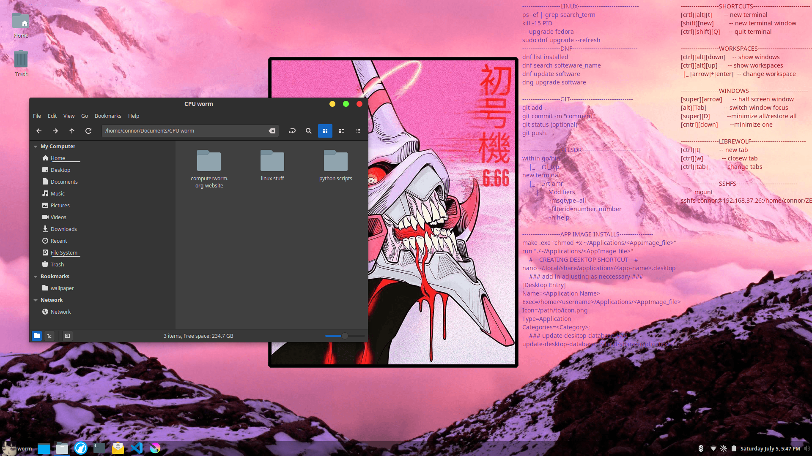
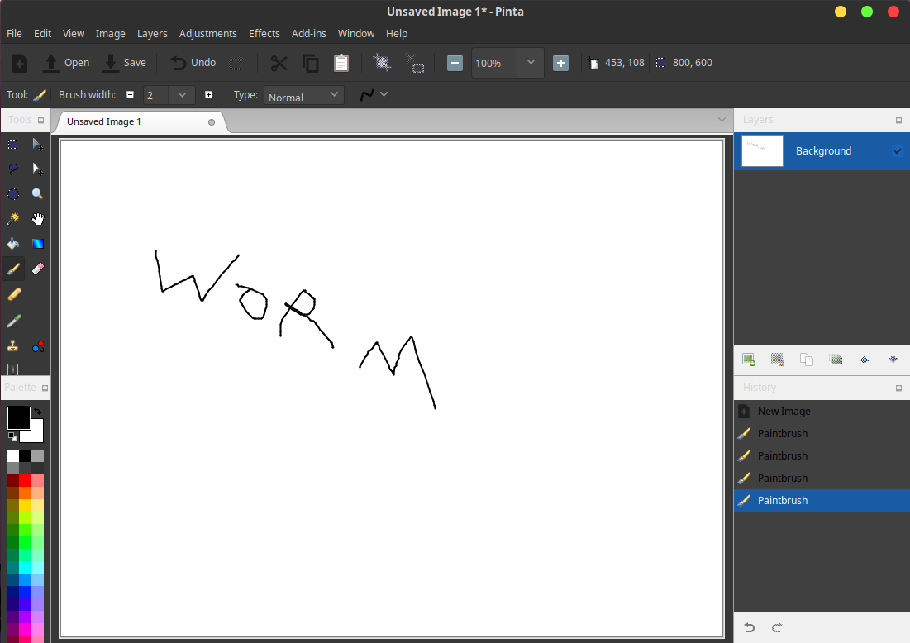
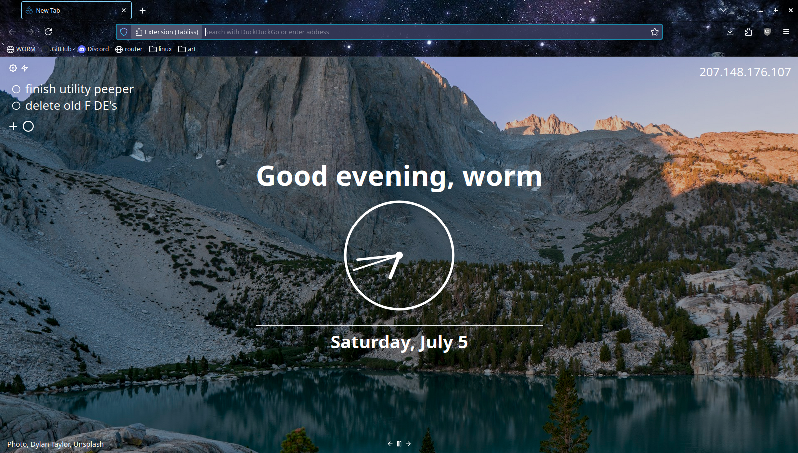
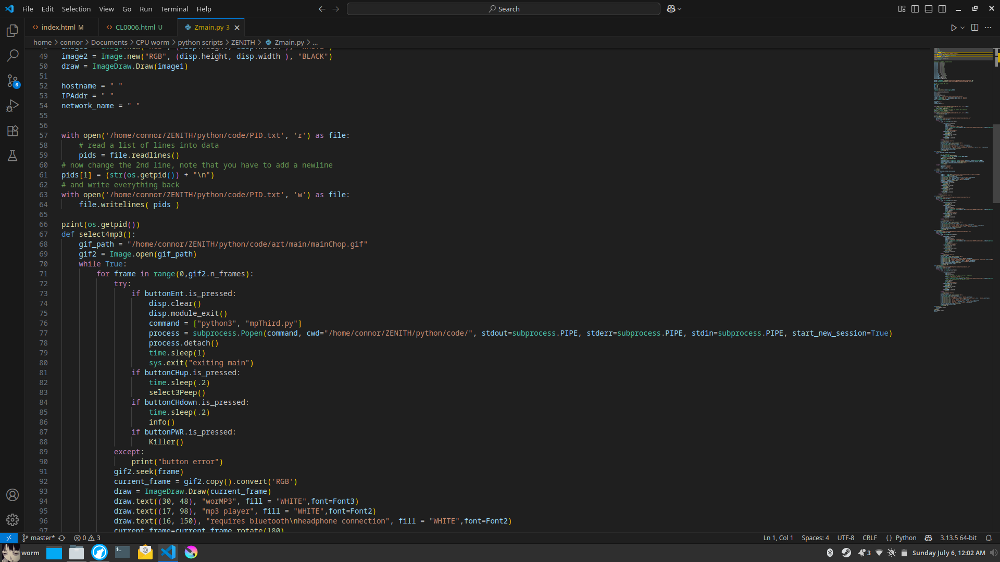
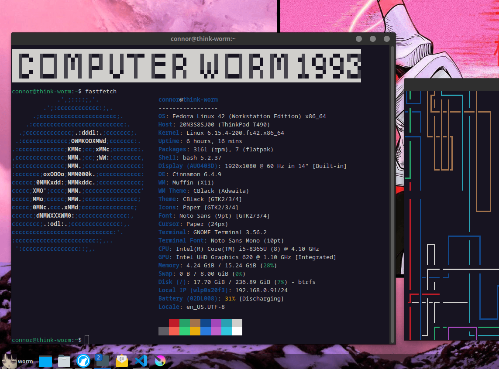
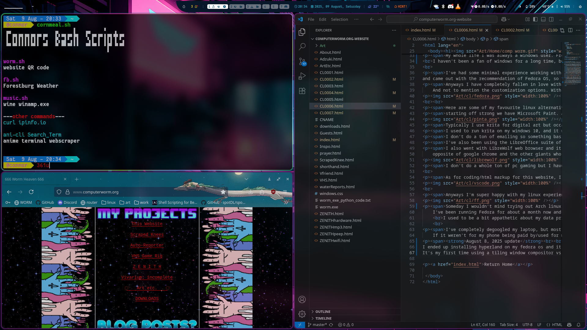

Captains Log 0003
July 5, 2025
Linux
My whole life I was always a windows user. From playing Civ II on the familys home computer running Windows 98. Then we got Windows XP, where I spent many long nights playing WC3 and downloading mp3s of KoRn and Linkin Park off of limewire, and I'm sure plenty of malware as well lol
I haven't been a fan of windows for a long time, but seeing how invasive to privacy windows 11 is I finally decided to fully commit and wipe windows off my machine for good and download linux
I've had some minimal experience working with linux by using raspberry pis, which run Raspbian [a version of Debian].
deciding which linux distro to use was a bit overwhelming so I ended up taking an online distro-chooser quiz
and came out with the recommendation of Fedora OS, so that's what I did. It was remarkably simple to install
Anyways I have completely fallen in love with linux and I feel like I've definitely come across as annoying to some of my friends by trying to convince them to finally rip the bandaid off and ditch windows as well. The experience is really night and day. Fedora is lighting fast, from booting up the computer from sleep to opening programs.
And not to mention the customization options. With linux you really can do anything you want

Here are some of my favourite linux alternatives to some of the staple programs that come with Windows
starting off strong we have Microsoft Paint. As an alternative I downloaded Pinta, and it is wayyy better. Just as light weight, but with the addition of being able to use layers and a few more tools as well.

Typically I use krita for digital art but occasionally if you just want to doodle or quickly crop or edit an image pinta is nice and light
I used to run krita on my windows 10, and it was great. But now using it on linux its even better. It's so freaking fast to launch
I don't do a ton of emailing so something basic is all I really need, and Thunderbird is simple, light weight and no nonsense
I've also been using the LibreOffice suite of programs that work as perfect dupes for Microsoft Word, Excel, and Powerpoint
I also went with LibreWolf web browser and it is the best browser I've used in years. Extremely customizable with even having widgets on your new tab screen. Here I have a reminder checklist, ip address displayer, clock, and custom message. It's a super privacy oriented broswer, pretty much the exact opposite of google chrome and the other giants who scrape so much personal data off of you every chance they get lol

I don't do a whole ton of pc gaming but I have been running steam perfectly, and any game made for steamdecks works fine out of the box as thats based on linux as well. Any other windows only games or programs I think are pretty easy to run in "virtual boxs", with the exeption of kernal level anti-cheat measures found in competative AAA games. Which I don't really usually play anyways.
As for coding/html markup for this website, I've been really really impressed with VS code. Which is suprising because it is developed by Microsoft. Genuinely one of the only things I still like by microsoft. Mind you it is the only refined coding program I have ever used, I started by writing my scripts in a plain text editor like notepad lol. VS codes live debugging/colour coding/integrated terminal is so useful

Anyways I'm super happy with my linux experience so far with Fedora

Someday I wouldn't mind trying out Arch linux or perhaps EndevourOS, but I've heard those are on the more difficult end of linux distros to choose from and have a bit of a learning curve.
I've been running Fedora for about a month now and I'm sure I'll discover more things I love and maybe things I really dislike as well but as it stands now I give it a resounding 10/10, highly recommend you give it a try. Especially if your like me and starting to feel fatigued by the big push for AI copilot nonsense or having it try to save all your files to the cloud/drive by default. Fuck that. Maybe I'm just getting old, but I genuinely do not want built in AI pushed into every nook and cranny of my life.
I used to be a bit appathetic about my data privacy as well but lately as I see the way the world is going, especially with tech oligarchs in the States like Palantirs contract to build a data base of every citizen, and all the nefarious ways they can use our data, I have found myself getting more and more disturbed by it. It's feeling less and less like just a way for companies to sell to me/advertise and more like a way to control and compartmentalize us. I don't like it.
I've completely degoogled my laptop, but most of my life like my banking etc are all still tied in with googles 2 factor authentication. I wouldn't mind downloading an open source os onto my phone like Graphene but I do have concerns about some apps I need to be able to use for work, like a gas meter reading/programming apps and a remote viewer/PLC controller for the water plant. If it weren't for my phone being paid by/used for work I 100% would commit to Graphene. So if your like me and want to move to more open-source privacy based lifestyle and can check it out let me know how it goes/if you like it.
August 8, 2025 update
I ended up installing hyperland on my fedora os and it is insanely smooth and beautifully polished, and of course ridiculously customizable. It's a bit cutting edge so it may break on occasion but so far it's been fantastic.
It's my first time using a tiling window compositor vs stacking windows like I'm used to from using microsoft Windows. It takes some getting used to but so far I'm loving it
